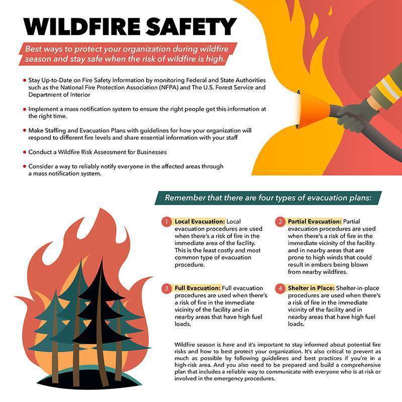

Wildfire Safety Guide
Learn how to protect yourself during forest fires in Turkey
Home
← Back to Wildfire

What To Do During a Wildfire
Stay calm and follow evacuation orders immediately.
Move away from fire areas and go to safe zones.
Cover your nose and mouth to avoid smoke inhalation.
Wear protective clothing to protect your skin.
Stay low to the ground where air is cleaner.
Emergency Information in Turkey
Call emergency number
112
immediately.
Follow instructions from AFAD and emergency services.
Listen to local news and official warnings.
Ask locals or hotel staff for guidance.
Before a Wildfire
Know evacuation routes in advance.
Prepare emergency supplies.
Keep your phone charged.
Avoid lighting fires in forests.
After a Wildfire
Do not return until authorities say it is safe.
Avoid burned areas and hot surfaces.
Check for injuries.
Follow official instructions.